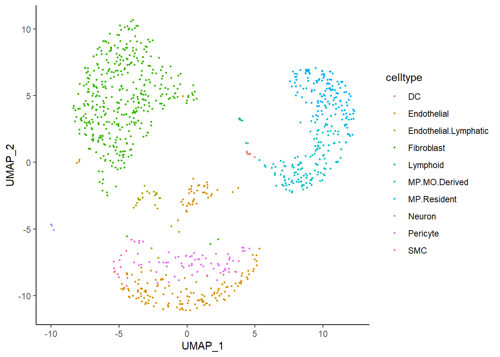
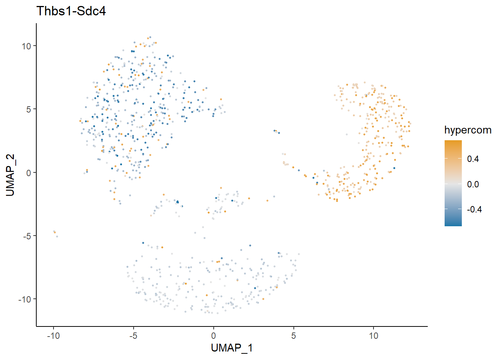
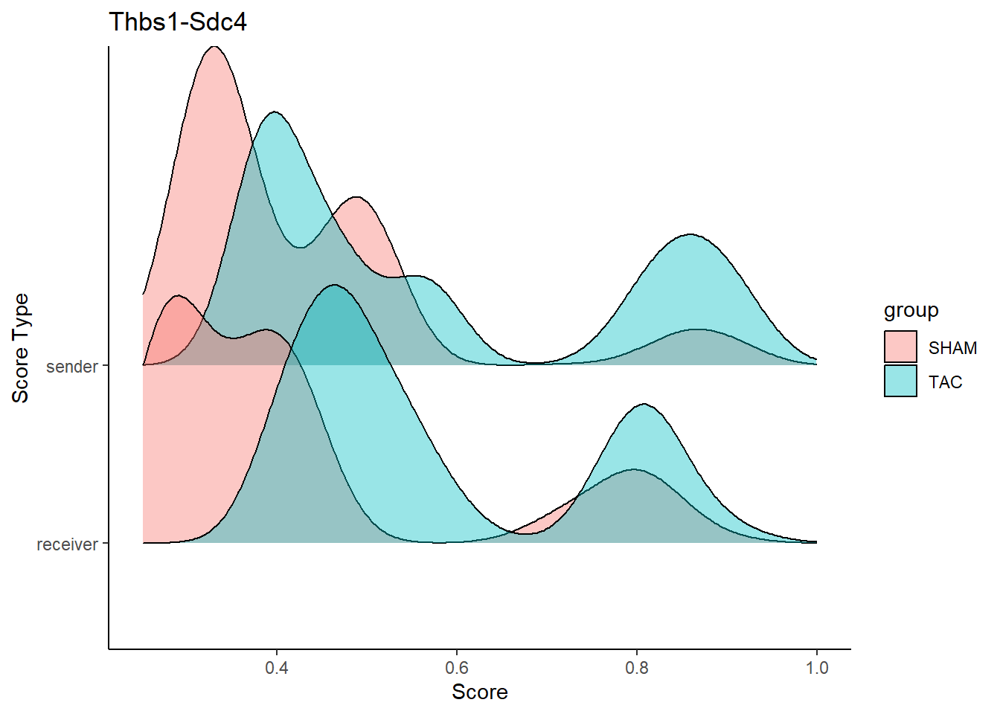

library(HyperCom)
library(dplyr)
library(ggplot2)
library(ggridges)
library(Matrix)
library(tidyr)HyperCom Overview
Last Updated: 2026-11-15
Inputs
HyperCom requires three inputs. Most failed runs come from one of these points, so check them first:
Counts: a gene x cell matrix with genes as row names and cells as column names, sparse or dense. Raw or normalised counts give the same results, since HyperCom only uses whether each gene is above 0 in each cell; never use scaled data (negative values stop the run). Cell names must be unique across samples: prefix the barcodes with their sample when merging samples.
Cell metadata: a dataframe with one row per cell, its row names being the cell names of the counts, with a sample column and optionally a group column. The sample is the library or replicate: cells are only compared with cells of their own sample, so every sample needs at least 2 cells that express a ligand or receptor gene. The group is the condition, for priorities specific to a group. Cells of the counts without a row in the metadata are left out, with a warning.
Ligand-receptor (LR) interactions whose gene symbols match the species of the counts. HyperCom contains 2 built in LR databases formatted properly:
CellChat human
cellchat.hs.lrdb(gene symbols such asTGFB1)CellChat mouse
cellchat.mm.lrdb(gene symbols such asTgfb1)
In this vignette we will use a 1000 cell subset of heart failure from Alexanian et al, 2021. This example subset is included in the package as alexanian2021.counts and alexanian2021.metadata; its counts are log-normalised.
counts <- alexanian2021.counts
dim(counts)[1] 17083 1000head(rownames(counts))[1] "Xkr4" "Sox17" "Mrpl15" "Lypla1" "Tcea1" "Rgs20" head(colnames(counts))[1] "AACCGCGTCCAGAGGA-2" "AACTCAGCACGAGGTA-2" "AACTCTTGTGCGAAAC-2"
[4] "AAGGAGCAGGATCGCA-2" "ACACCAAAGACCCACC-2" "ACACCGGAGCTACCGC-2"cell.meta <- alexanian2021.metadata
head(cell.meta) sample condition celltype UMAP_1 UMAP_2
AACCGCGTCCAGAGGA-2 2 SHAM Endothelial 1.2676813 -10.036637
AACTCAGCACGAGGTA-2 2 SHAM Endothelial 1.7707077 -9.448688
AACTCTTGTGCGAAAC-2 2 SHAM Endothelial 0.2925013 -9.781118
AAGGAGCAGGATCGCA-2 2 SHAM Endothelial 1.1058826 -10.454998
ACACCAAAGACCCACC-2 2 SHAM Endothelial -3.3748763 -10.034042
ACACCGGAGCTACCGC-2 2 SHAM Endothelial 3.9700553 -8.899605table(cell.meta$sample, cell.meta$condition)
SHAM TAC
2 500 0
3 0 500ggplot(cell.meta, aes(x=UMAP_1, y=UMAP_2, colour=celltype)) +
geom_point(size=0.5) +
theme_classic()
For the LR interactions we will use the CellChat murine database. The first column names the interaction, the second is the ligand and the others the receptor genes (NA where a receptor complex has fewer subunits).
lrdb <- cellchat.mm.lrdb
dim(lrdb)[1] 2377 6head(lrdb, 2) interaction ligand r1 r2 r3 r4
1 TGFB1_TGFBR1_TGFBR2 Tgfb1 Tgfbr1 Tgfbr2 <NA> <NA>
2 TGFB2_TGFBR1_TGFBR2 Tgfb2 Tgfbr1 Tgfbr2 <NA> <NA>Running HyperCom
The whole pipeline runs with one call to HyperCom. It writes every step to outdir and returns the results as a list, so they need not be read back. parallel=TRUE uses one thread per physical core and threads sets the number directly (the default is one thread). significance=TRUE adds p-values and seed makes them reproducible.
outdir <- file.path(tempdir(), "overview")
res <- HyperCom(lrdb=cellchat.mm.lrdb, counts=alexanian2021.counts,
metadata=alexanian2021.metadata, sample="sample",
group="condition", significance=TRUE, seed=1,
parallel=TRUE, outdir=outdir, verbose=FALSE)
head(res$priority[["1"]]) interaction ligand r1 r2 r3 priority p p.adj
1 THBS1_SDC4 Thbs1 Sdc4 <NA> <NA> 0.3313764 0.000 0.00000000
2 PGF_VEGFR1 Pgf Flt1 <NA> <NA> 0.3179562 0.000 0.00000000
3 COMP_SDC4 Comp Sdc4 <NA> <NA> 0.2923955 0.001 0.03688496
4 FN1_SDC4 Fn1 Sdc4 <NA> <NA> 0.2717061 0.001 0.03688496
5 POSTN_ITGAV_ITGB5 Postn Itgav Itgb5 <NA> 0.2651227 0.001 0.03688496
6 CCL4_CCR5 Ccl4 Ccr5 <NA> <NA> 0.2645498 0.001 0.03688496The files are numbered in the order of the steps below: 0.counts.rds (the filtered counts), 1.lrs.csv (the interactions whose genes are all expressed), 2.hyperedges.csv, 3.adj.rds (the adjacency matrix), 4.infMat.rds (the influence matrix), 5.metadata.csv and one 6.priority/priority.<weight>.csv per weight. CSV files read back with read.csv; the .rds files with readRDS after library(HyperCom).
list.files(outdir, recursive=TRUE)[1] "0.counts.rds" "1.lrs.csv"
[3] "2.hyperedges.csv" "3.adj.rds"
[5] "4.infMat.rds" "5.metadata.csv"
[7] "6.priority/priority.1.csv"priority <- read.csv(file.path(outdir, "6.priority", "priority.1.csv"))
infMat <- readRDS(file.path(outdir, "4.infMat.rds"))For a Seurat object, HyperCom_seurat reads one layer of one assay (by default the counts layer of the RNA assay, Seurat v5 or older assays) and the cell metadata; sample, group and keep name columns of the cell metadata (seurat[[]]). It needs the SeuratObject package.
res <- HyperCom_seurat(seurat=seurat_object, lrdb=cellchat.mm.lrdb, sample="sample",
assay="RNA", layer="counts", group="condition",
parallel=TRUE, outdir="overview")Run time and memory
Memory grows with the number of cells per sample squared, since cells are compared within their sample: more samples of the same size cost little. Measured with parallel=TRUE on 16 threads:
| cells | samples | time | memory |
|---|---|---|---|
| 1,000 (this vignette) | 2 | seconds | under 1 GB |
| 20,000 | 3 | about 1.5 min | about 3.5 GB |
| 50,000 | 3 | about 28 min | about 19 GB |
The influence matrix is never built in full by default, so its memory grows with the number of cells rather than its square. infmat.method="lu" builds it in full and reproduces the numbers of HyperCom 0.0.0.9000 exactly (the default agrees with them to about 1e-15), at the cost of two matrices of all cells and genes squared.
Running HyperCom step by step
The rest of this vignette runs each component function of the pipeline in turn, with outfile=NULL so nothing is written.
Preprocessing
In order to reduce memory usage, we first filter the counts matrix to only genes present in the LR interactions with expression greater than 0. The function also transposes the matrix.
lr.counts <- filter_counts(counts=counts, lrdb=lrdb, outfile=NULL)
dim(lr.counts)[1] 1000 663Next we filter the ligand receptor interactions to only interactions where all genes are present in the filtered expression matrix.
lrs <- generate_lrs_table(counts=lr.counts, lrdb=lrdb, outfile=NULL)
dim(lrs)[1] 1042 5Generating Hypergraph
To generate the hyperedges, which are edges that contain multiple nodes, we use the expression matrix and the LR interactions to create 2 types of hyperedges:
expression edges - edges containing a ligand or receptor gene and the cells that express it
interaction edges - edges containing the genes that comprise an LR interaction
HyperCom represents these hyperedges as a dataframe with an edge and node column where the node belongs to the edge. The weight is set to 1 for each edge.
hyperedges <- generate_hyperedges(counts=lr.counts, lrs=lrs, outfile=NULL)
head(hyperedges, 2)# A tibble: 2 × 3
edge node weight
<chr> <chr> <dbl>
1 TGFB1_TGFBR1_TGFBR2 Tgfb1 1
2 TGFB1_TGFBR1_TGFBR2 Tgfbr1 1We can represent this hypergraph as an adjacency matrix where the nodes are the cells, ligand genes, and receptor genes. Each entry is the number of hyperedges shared by nodes. The matrix is not stored: adj keeps which nodes are in which hyperedge, which is much smaller, and works like a matrix (dim(adj), adj[i, j], as.matrix(adj) for the whole matrix).
adj <- generate_adjacency_matrix(hyperedges=hyperedges, outfile=NULL)
dim(adj)[1] 1663 1663adj[c("Thbs1", "Sdc4"), 1:3] node
node AAAGATGCACAGATTC-3 AAAGATGCAGCTCGCA-3 AAAGATGCAGGTCTCG-3
Thbs1 1 1 0
Sdc4 0 0 0Calculating Network Connectivity
In order to calculate the network connectivity of the hypergraph we perform a random walk with restart on the adjacency matrix to produce an influence matrix: entry (i, j) is the share of a walk started at node i that ends at node j, so each row sums to 1. At every step the walk returns to its start with the restart probability r, so about r of each node’s influence stays on the node itself and the rest spreads over the nodes it shares hyperedges with. generate_infMat takes r (default 0.5); HyperCom always uses 0.5. On this example the ranking of LR pairs hardly depends on it: r = 0.1 and 0.8 give the same top 20 pairs as 0.5. Like the adjacency matrix, the influence matrix works like a matrix without being stored in full.
infMat <- generate_infMat(adj=adj, r=0.5, outfile=NULL)
dim(infMat)[1] 1663 1663infMat[c("Thbs1", "Sdc4"), 1:3] AAAGATGCACAGATTC-3 AAAGATGCAGCTCGCA-3 AAAGATGCAGGTCTCG-3
Thbs1 0.001564199 0.0015831587 0.0002673712
Sdc4 0.000335307 0.0003461792 0.0002531521Preparing Metadata
To account for genes now being present in the matrices, we then process the metadata to contain information on the genes as well as cell metadata. Additionally to reduce memory, we reduce the number of columns to just cell, sample, and group; gene nodes get "gene" in each. Optionally other metadata columns can be kept with keep.
node.meta <- generate_metadata(infMat=infMat, metadata=cell.meta,
sample="sample", group="condition",
keep=NULL, outfile=NULL)
head(node.meta) cell sample group
1 AAAGATGCACAGATTC-3 3 TAC
2 AAAGATGCAGCTCGCA-3 3 TAC
3 AAAGATGCAGGTCTCG-3 3 TAC
4 AAAGATGGTGTTTGGT-2 2 SHAM
5 AAAGTAGAGGAGTTTA-2 2 SHAM
6 AAAGTAGCACATTTCT-2 2 SHAMDownstream Analysis
Identifying Important LR Pairs
We can also identify important LR pairs by using HyperCom scoring on LR pairs. This prioritization scores LR pairs to find highly communicative LR pairs that are optionally group specific. The priority of a pair is the weighted geometric mean of five terms of the cells that express its genes: their fraction of all cells, the smallest fraction of cells expressing one of its genes, the mean of each cell’s larger score as sender or receiver, how evenly they split into senders and receivers, and how much they concentrate in some groups. The weights arg sets how much the fraction of cells counts: 1 (the default) weighs it like the other terms and smaller values favor pairs specific to fewer cells; a vector of weights gives one result each.
priority <- prioritize_lr(lrs=lrs, adj=adj, infMat=infMat, metadata=node.meta,
weights=c(1, 0.5), parallel=TRUE, outdir=NULL,
verbose=FALSE)
head(priority[["1"]]) interaction ligand r1 r2 r3 priority
1 THBS1_SDC4 Thbs1 Sdc4 <NA> <NA> 0.3313764
2 PGF_VEGFR1 Pgf Flt1 <NA> <NA> 0.3179562
3 COMP_SDC4 Comp Sdc4 <NA> <NA> 0.2923955
4 FN1_SDC4 Fn1 Sdc4 <NA> <NA> 0.2717061
5 POSTN_ITGAV_ITGB5 Postn Itgav Itgb5 <NA> 0.2651227
6 CCL4_CCR5 Ccl4 Ccr5 <NA> <NA> 0.2645498The result has one table per weight, with the columns of the LR table and the priority. With significance=TRUE, as in the HyperCom call above, it also has p and p.adj: p is the fraction of 1000 background pairs of random genes whose priority is at least as high, so it moves in steps of 0.001 and 0 means none was as high (background pairs that get no priority are left out, with a warning); p.adj is its Benjamini-Hochberg adjustment. This takes about four times as long.
head(res$priority[["1"]][, c("interaction", "priority", "p", "p.adj")]) interaction priority p p.adj
1 THBS1_SDC4 0.3313764 0.000 0.00000000
2 PGF_VEGFR1 0.3179562 0.000 0.00000000
3 COMP_SDC4 0.2923955 0.001 0.03688496
4 FN1_SDC4 0.2717061 0.001 0.03688496
5 POSTN_ITGAV_ITGB5 0.2651227 0.001 0.03688496
6 CCL4_CCR5 0.2645498 0.001 0.03688496Scoring Cells
We see that Thbs1-Sdc4 is the highest scoring LR pair. We can calculate HyperCom scores for this pair. Each pair of cells i and j of a sample is scored by how strongly cell i reaches the ligand and the receptor reaches cell j, relative to how strongly i reaches j; these scores are percent-ranked together. A cell’s sender score is its average rank as cell i and its receiver score its average rank as cell j (between 0 and 1); dif is receiver - sender, avg their mean and max the larger. The HyperCom score hypercom is the sign of dif times the percent rank of its size among the cells times avg: negative for senders, positive for receivers. Cells with no path to the pair’s genes get NaN.
Thbs1_Sdc4 <- score_hypercom(infMat=infMat, metadata=node.meta, ligand="Thbs1",
receptors="Sdc4")
head(Thbs1_Sdc4[, c("cell", "sender", "receiver", "max", "hypercom")]) cell sender receiver max hypercom
1 ATTATCCAGCTACCGC-3 0.4554808 0.9505336 0.9505336 0.6882292
2 CGTTAGAGTTACGCGC-3 0.4754217 0.9072661 0.9072661 0.6345970
3 ACTGTCCCAATAACGA-2 0.4947958 0.9135973 0.9135973 0.6245427
4 TCTCTAATCTTTAGTC-2 0.3524036 0.8681149 0.8681149 0.6053723
5 CTGAAGTAGTCGTTTG-3 0.3960002 0.8620137 0.8620137 0.6044511
6 CATTATCTCTCTGCTG-2 0.3319691 0.8752518 0.8752518 0.6017978On the UMAP, senders are blue and receivers orange; cells that express no ligand or receptor gene are not in the hypergraph and stay grey.
umap <- data.frame(cell=rownames(cell.meta), UMAP_1=cell.meta$UMAP_1, UMAP_2=cell.meta$UMAP_2)
umap <- left_join(umap, Thbs1_Sdc4[, c("cell", "hypercom")], by=join_by(cell))
ggplot(umap, aes(x=UMAP_1, y=UMAP_2, colour=hypercom)) +
geom_point(size=0.5) +
scale_colour_gradient2(low="#0074a7", mid="grey90", high="#e69c25", na.value="grey70") +
ggtitle("Thbs1-Sdc4") +
theme_classic()
If we plot the sender and receiver score we see both higher densities of sender and receiver cells in TAC.
Thbs1_Sdc4 <- left_join(Thbs1_Sdc4, node.meta, by=join_by(cell))
melt.Thbs1_Sdc4 <- pivot_longer(dplyr::select(Thbs1_Sdc4, c(cell, group, sender, receiver)), !c(cell, group), names_to = "type", values_to = "score")
ggplot(melt.Thbs1_Sdc4, aes(x = score, y = type, fill=group)) +
geom_density_ridges(alpha=0.4) +
xlim(0.25, 1) +
xlab("Score") +
ylab("Score Type") +
ggtitle("Thbs1-Sdc4") +
theme_classic()Picking joint bandwidth of 0.0387
For a receptor complex, give all its subunits: the scores of the subunits are averaged.
Tgfb1_Tgfbr <- score_hypercom(infMat=infMat, metadata=node.meta, ligand="Tgfb1",
receptors=c("Tgfbr1", "Tgfbr2"))
head(Tgfb1_Tgfbr[, c("cell", "sender", "receiver", "hypercom")]) cell sender receiver hypercom
1 TCTGAGAGTCATCGGC-3 0.4840497 0.9397033 0.6990499
2 CGACTTCAGGATCGCA-3 0.4438649 0.8966255 0.6568269
3 GATGAAAGTTGTCGCG-3 0.4518743 0.8918048 0.6523367
4 GAAATGACAATGGACG-3 0.4362486 0.8855002 0.6463206
5 TTAGTTCAGGCTACGA-3 0.4291181 0.8830470 0.6436045
6 GGATTACCACCTTGTC-3 0.4488283 0.8776201 0.6406520Citation
citation("HyperCom")To cite package 'HyperCom' in publications use:
Moy JK, Przytycki PF (2026). "HyperCom: a hypergraph-based method to
infer cell-resolved cell-cell communication." _bioRxiv_.
doi:10.64898/2026.09.30.755742
<https://doi.org/10.64898/2026.09.30.755742>,
<https://www.biorxiv.org/content/10.64898/2026.09.30.755742v1>.
A BibTeX entry for LaTeX users is
@Article{,
title = {HyperCom: a hypergraph-based method to infer cell-resolved cell-cell communication},
author = {Justin K. Moy and Pawel F. Przytycki},
journal = {bioRxiv},
year = {2026},
doi = {10.64898/2026.09.30.755742},
url = {https://www.biorxiv.org/content/10.64898/2026.09.30.755742v1},
}sessionInfo()R version 4.4.2 (2024-10-31 ucrt)
Platform: x86_64-w64-mingw32/x64
Running under: Windows 11 x64 (build 26300)
Matrix products: default
locale:
[1] LC_COLLATE=English_United States.utf8
[2] LC_CTYPE=English_United States.utf8
[3] LC_MONETARY=English_United States.utf8
[4] LC_NUMERIC=C
[5] LC_TIME=English_United States.utf8
time zone: America/New_York
tzcode source: internal
attached base packages:
[1] stats graphics grDevices utils datasets methods base
other attached packages:
[1] tidyr_1.3.2 Matrix_1.7-1 ggridges_0.5.6 ggplot2_3.5.2 dplyr_1.2.1
[6] HyperCom_0.2.0
loaded via a namespace (and not attached):
[1] gtable_0.3.6 jsonlite_2.0.0 compiler_4.4.2 tidyselect_1.2.1
[5] Rcpp_1.0.14 parallel_4.4.2 scales_1.4.0 yaml_2.3.10
[9] fastmap_1.2.0 lattice_0.22-6 R6_2.6.1 labeling_0.4.3
[13] generics_0.1.4 knitr_1.50 htmlwidgets_1.6.4 tibble_3.3.1
[17] pillar_1.11.1 RColorBrewer_1.1-3 rlang_1.2.0 utf8_1.2.6
[21] xfun_0.52 cli_3.6.3 withr_3.0.2 magrittr_2.0.3
[25] digest_0.6.37 grid_4.4.2 lifecycle_1.0.5 vctrs_0.7.3
[29] evaluate_1.0.3 glue_1.8.0 farver_2.1.2 parallelly_1.47.0
[33] rmarkdown_2.29 purrr_1.0.4 tools_4.4.2 pkgconfig_2.0.3
[37] htmltools_0.5.8.1